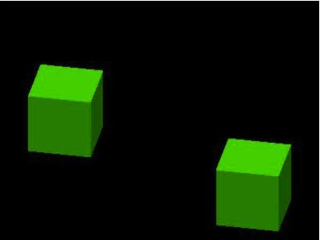
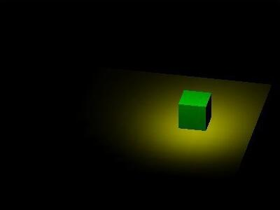
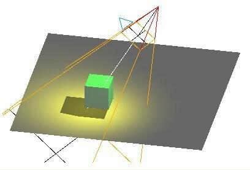

光照 Light
three.js常用的光照模型
-
环境光 AmbientLight(hex)
环境光是指场景整体的光照效果，是由场景内若干个光源的多次反射形成的亮度一致的效果，通常用来为整个场景指定一个基础亮度
环境光没有明确的光源位置，在各处形成的亮度也是一致的
环境光通常使用白色或灰色，作为整体光照的基础，否则渲染效果可能会很奇怪

-
点光源 PointLight(hex, intensity, distance)
点光源不计光源大小，可以看作是一个点发出的光源
点光源照到不同物体表面的亮度是线性递减的，因此离点光源越远的物体会越暗

-
平行光 DirectionalLight(hex, intensity)
对于任意平行的平面，平行光照射的亮度都是相同的，而与平面所在的位置无关
对于平行光而言，设置光源位置尤为重要，它决定了光照的方向

-
聚光灯 SpotLight(hex, intensity, distance, angle, exponent)
聚光灯是一种特殊的点光源，它能够朝着一个方向投射出类似圆锥形的光线
聚光灯可以随着物体移动

明暗是相对的，阴影的形成是因为比周围获得的光照更少，因此要形成阴影，必须要有光源
能形成阴影的光源有平行光和聚光灯
能表现阴影效果的材质有LambertMaterial和PhongMaterial
对产生阴影的物体设置castShadow，对接收阴影的物体设置receiveShadow
